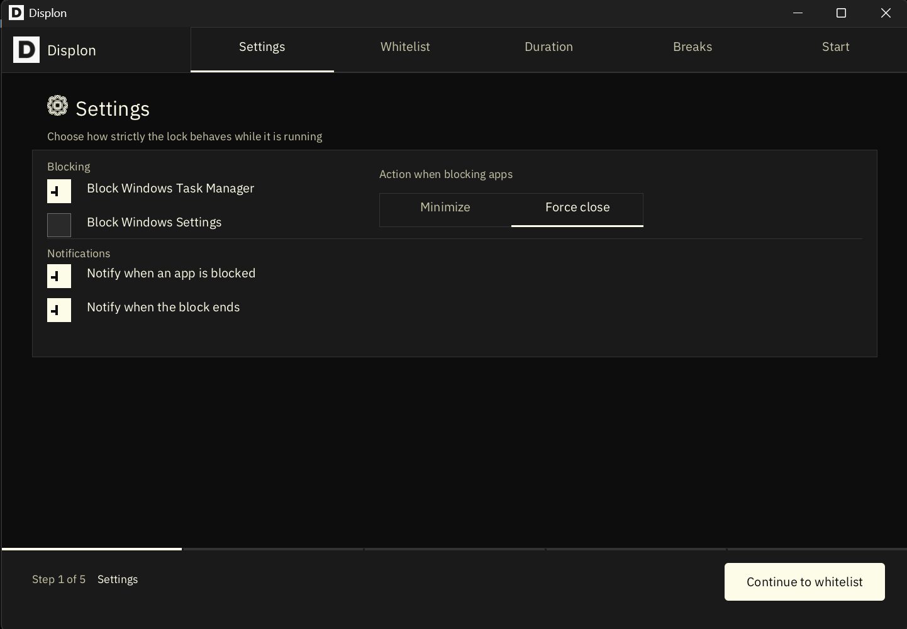
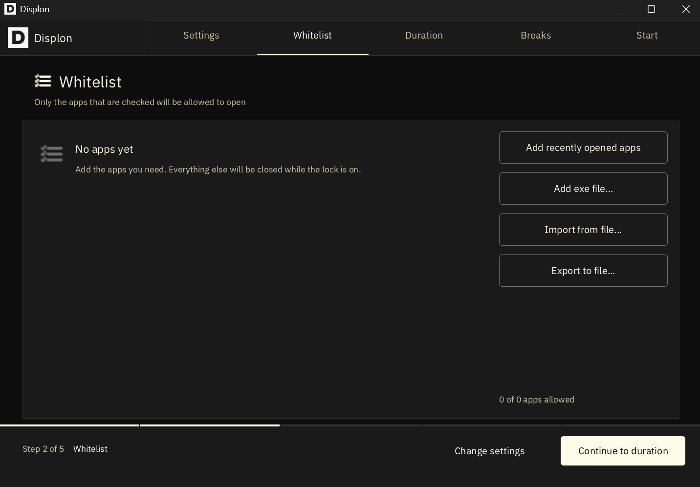
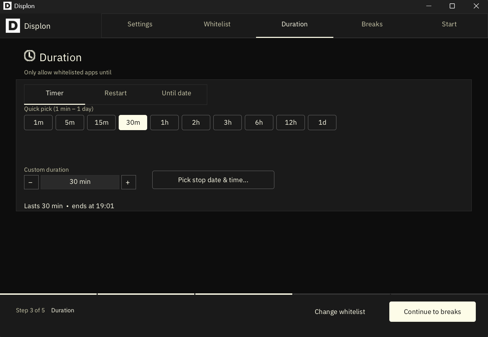
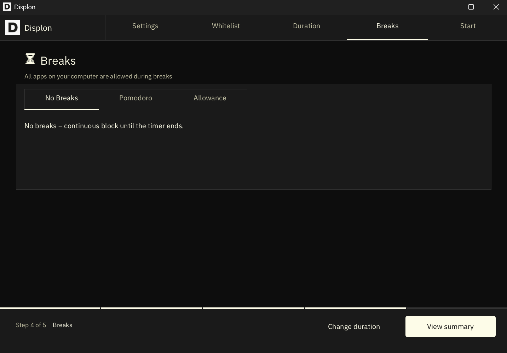
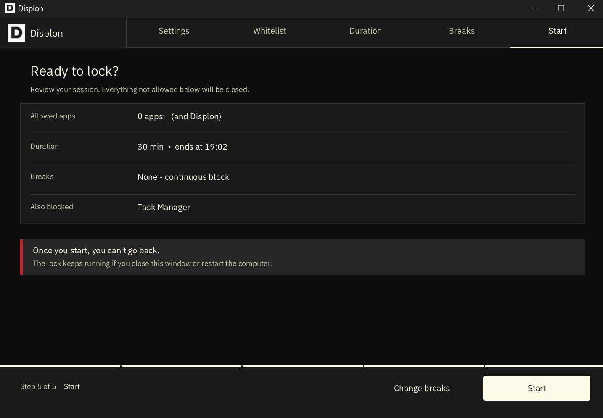
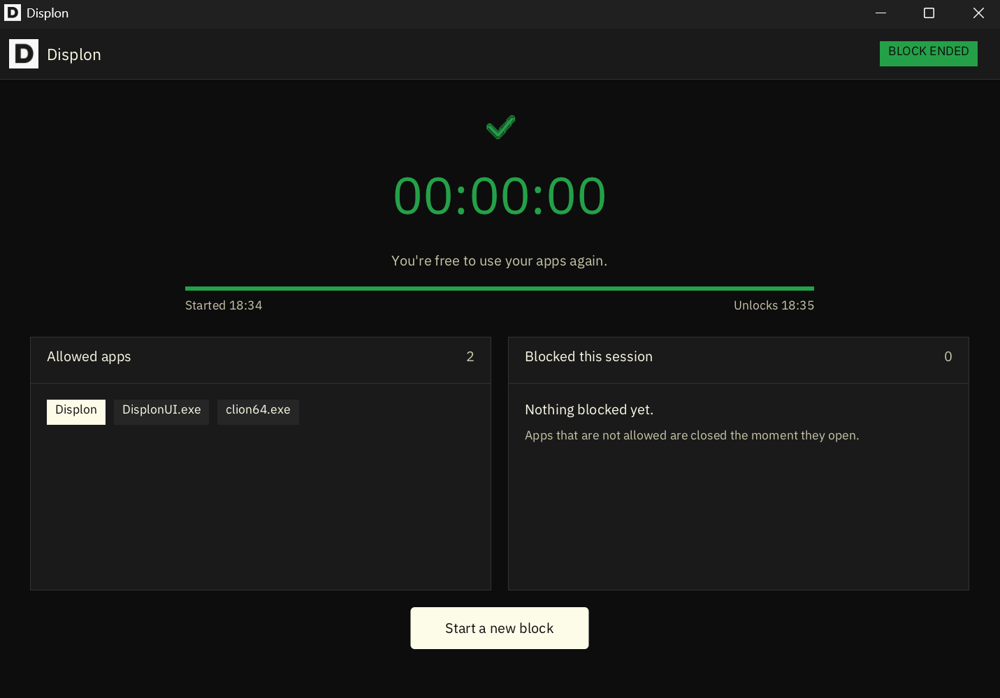

Displon – Free Open Source Focus App & Distraction Blocker for Windows
Displon is an open source native Windows app that lets you run only the applications you list. It helps you stop multitasking and focus on a single task.
Download for Windows View on GitHubAlpha: Displon v0.1 is tested on several Windows 11 devices. Windows 10 support is still under testing.
Features
- Import / export app list from file
- Pomodoro-based blocking
- Schedule-based blocking
- Windows Settings and Task Manager block
- Autostart block, even if killed from Task Manager or after a system restart
- Uninstallation block during lockout
- Block time tracking
- Custom block duration, from 1 minute to any time range
- Autoswich between dark and light mode based on system setting
Screenshots
Settings

Whitelist

Duration

Breaks

Confirmation

Lock Finish

System requirements
| Operating system | Windows 10 / 11 (x64) |
| Storage | 20 MB |
| RAM | 100 MB |
| GPU | Not required |
Installation
Install with Scoop
Too install Displon,open Poweshell im Administration mode and type:
scoop bucket add displon https://github.com/withlimon/displon
scoop install displonYou can update easily later by:
scoop update displonYou can uninstall it by:
scoop uninstall displonDownload
Displon x64 Windows v0.1 alpha
Support / critical bug
Open an issue on GitHub or email limondasplus@gmail.com.
License
Free and open source under the GNU GPL v3.